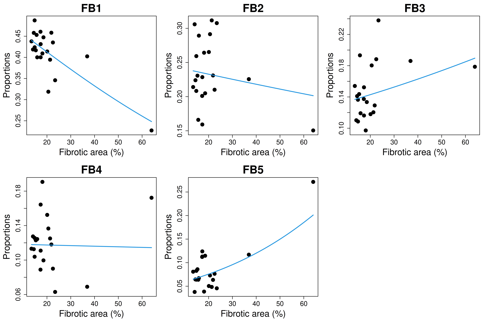
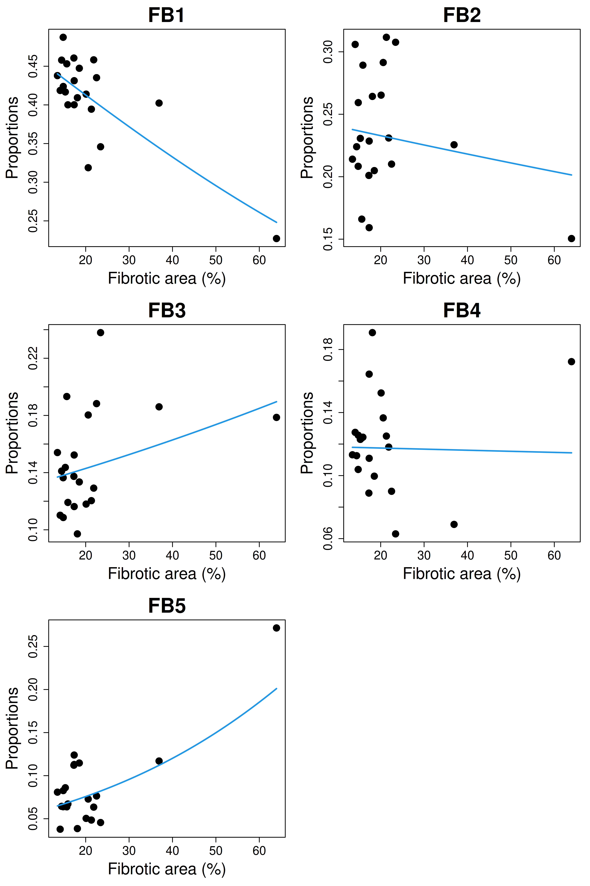
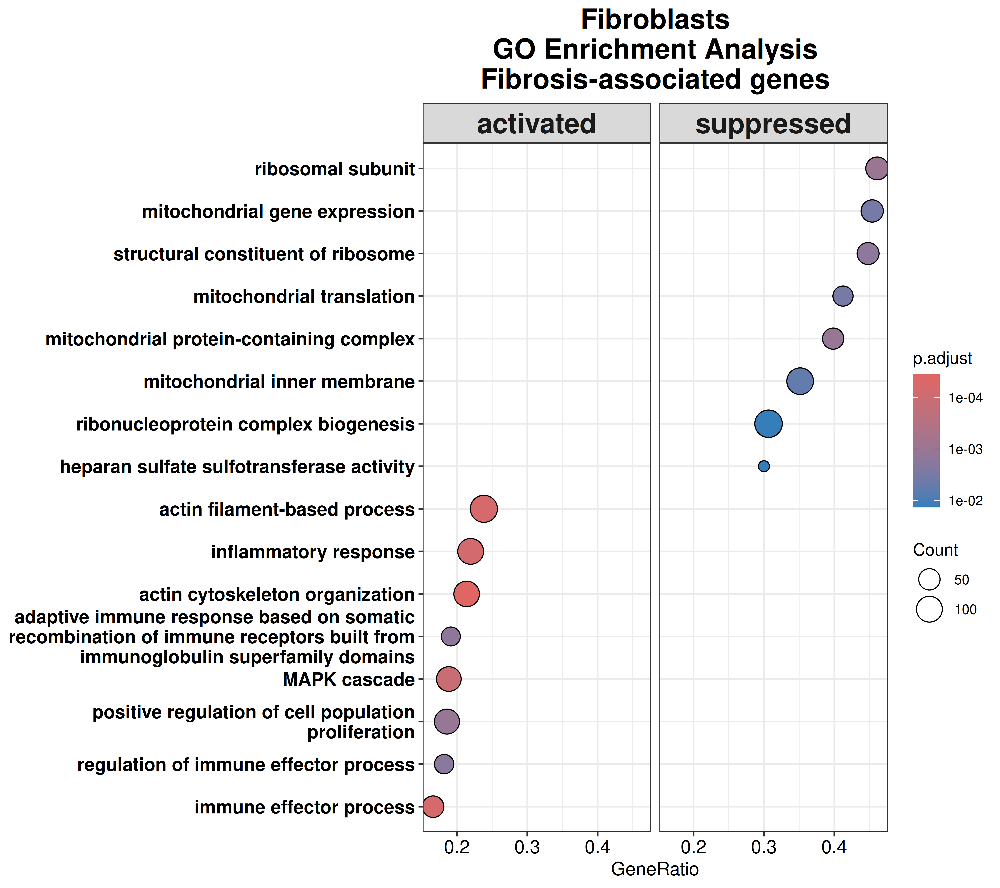
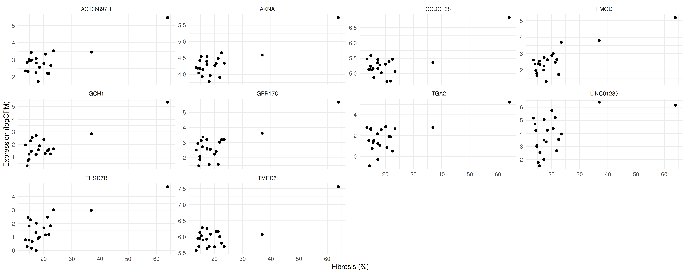
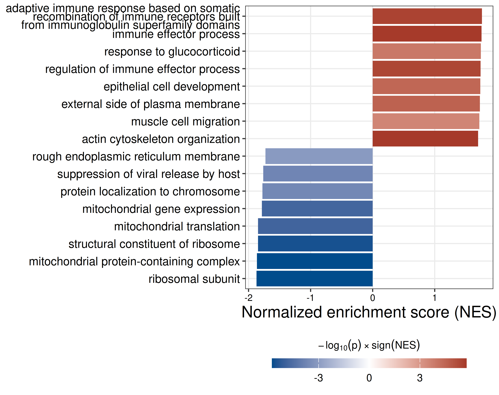
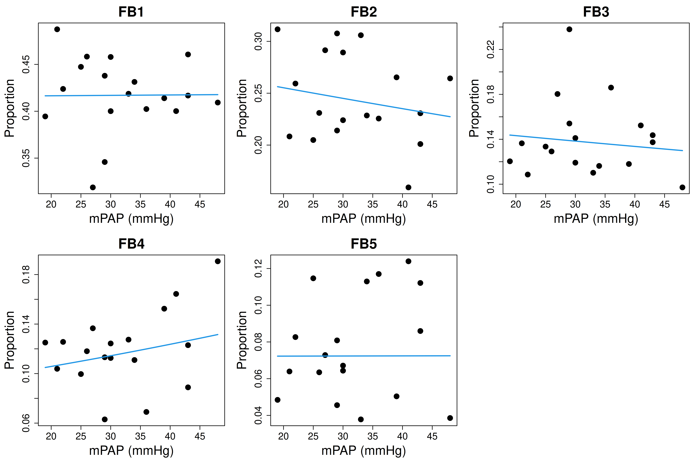
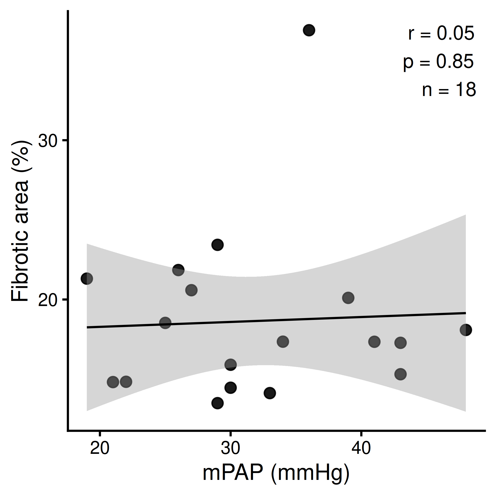

Differential expression analysis in fibroblasts using fibrosis
GinoBonazza (ginoandrea.bonazza@usz.ch)
17 August, 2026
Last updated: 2026-08-17
Checks: 7 0
Knit directory: DCM_snRNAseq/
This reproducible R Markdown analysis was created with workflowr (version 1.7.2). The Checks tab describes the reproducibility checks that were applied when the results were created. The Past versions tab lists the development history.
Great! Since the R Markdown file has been committed to the Git repository, you know the exact version of the code that produced these results.
Great job! The global environment was empty. Objects defined in the global environment can affect the analysis in your R Markdown file in unknown ways. For reproduciblity it’s best to always run the code in an empty environment.
The command set.seed(20240606) was run prior to running
the code in the R Markdown file. Setting a seed ensures that any results
that rely on randomness, e.g. subsampling or permutations, are
reproducible.
Great job! Recording the operating system, R version, and package versions is critical for reproducibility.
Nice! There were no cached chunks for this analysis, so you can be confident that you successfully produced the results during this run.
Great job! Using relative paths to the files within your workflowr project makes it easier to run your code on other machines.
Great! You are using Git for version control. Tracking code development and connecting the code version to the results is critical for reproducibility.
The results in this page were generated with repository version 9fa4d77. See the Past versions tab to see a history of the changes made to the R Markdown and HTML files.
Note that you need to be careful to ensure that all relevant files for
the analysis have been committed to Git prior to generating the results
(you can use wflow_publish or
wflow_git_commit). workflowr only checks the R Markdown
file, but you know if there are other scripts or data files that it
depends on. Below is the status of the Git repository when the results
were generated:
Ignored files:
Ignored: .Rhistory
Ignored: .Rproj.user/
Ignored: output/CellChat/
Ignored: output/Cell_cell_communication_Macrophages/
Ignored: output/Chaffin_2022/
Ignored: output/Comparison_RV_bulk_RNAseq/
Ignored: output/Koenig_2022/
Ignored: output/Matrifibrocytes/
Ignored: output/Matrifibrocytes_disease_vs_HC_adj_subsets/
Ignored: output/SSc_PAH/
Untracked files:
Untracked: .Rprofile
Untracked: Chaffin_wilcox.csv
Untracked: GRCh38-2020-A_build/
Untracked: Koenig_wilcox.csv
Untracked: analysis/Amrute_2024_fibroblast_integration.Rmd
Untracked: analysis/Amrute_2024_fibroblast_pseudobulk.Rmd
Untracked: analysis/Chaffin_2022.Rmd
Untracked: analysis/Check_IMC_panel.Rmd
Untracked: analysis/Comparison_RV_bulk_RNAseq.Rmd
Untracked: analysis/DE_Group_all_cell_types.Rmd
Untracked: analysis/EC_capillary_angiogenic_boxplot_stats.csv
Untracked: analysis/Endothelial_cells_SGLT2_I.Rmd
Untracked: analysis/Fibroblasts_DA_DE_26.Rmd
Untracked: analysis/Genes_Luxembourg.Rmd
Untracked: analysis/HC_DEGs_clustering.Rmd
Untracked: analysis/Koenig_2022.Rmd
Untracked: analysis/Mass_Spec_RV_dysf.Rmd
Untracked: analysis/Mass_Spec_proteomics.Rmd
Untracked: analysis/Mass_Spec_proteomics_2.Rmd
Untracked: analysis/Mass_Spec_proteomics_3.Rmd
Untracked: analysis/Matrifibrocytes.Rmd
Untracked: analysis/Matrifibrocytes_2.Rmd
Untracked: analysis/Matrifibrocytes_3.Rmd
Untracked: analysis/Matrifibrocytes_disease_vs_HC.Rmd
Untracked: analysis/Matrifibrocytes_disease_vs_HC_adj.Rmd
Untracked: analysis/Matrifibrocytes_disease_vs_HC_adj_subsets.Rmd
Untracked: analysis/Matrifibrocytes_high_score_populations_disease_vs_HC_adj.Rmd
Untracked: analysis/Matrifibrocytes_integration.Rmd
Untracked: analysis/Olink_RV_dysf.Rmd
Untracked: analysis/Olink_SSc_PAH.Rmd
Untracked: analysis/Olink_SSc_PAH_draft.Rmd
Untracked: analysis/Olink_proteomics_2.Rmd
Untracked: analysis/Proteomics_OLINK_MS.Rmd
Untracked: analysis/Proteomics_combined.Rmd
Untracked: analysis/Proteomics_combined_2.Rmd
Untracked: analysis/Pseudobulk_all.csv
Untracked: analysis/Pseudobulk_all_2.csv
Untracked: analysis/Pseudobulk_byCellType_facetGrid.pdf
Untracked: analysis/Pseudobulk_byCellType_filtered_wrap3col.pdf
Untracked: analysis/Pseudobulk_byCellType_filtered_wrap3col_proportional.pdf
Untracked: analysis/Pseudobulk_byCellType_wilcox.csv
Untracked: analysis/Pseudobulk_byCellType_wilcox.filtered.csv
Untracked: analysis/Pseudobulk_byCellType_wilcox_2.csv
Untracked: analysis/QC_integration_annotation_HC.Rmd
Untracked: analysis/Reichart_ncRNA.Rmd
Untracked: analysis/Reichart_wilcox.csv
Untracked: analysis/Selection_genes_histology.Rmd
Untracked: analysis/TAPSE_sPAP_concordance_3datasets.Rmd
Untracked: analysis/TF_activity_program_score_correlations_by_sample.csv
Untracked: analysis/TF_activity_program_scores_by_sample_cell_state.csv
Untracked: analysis/TOM/
Untracked: analysis/UntitledR.R
Untracked: analysis/ec_Reichart_logCPM.csv
Untracked: analysis/mPAP_concordance_3datasets.Rmd
Untracked: analysis/omnipathr-log/
Untracked: analysis/prot_test.Rmd
Untracked: analysis/test_1.Rmd
Untracked: analysis/test_fb_prot.Rmd
Untracked: code/Add_metadata.R
Untracked: code/Check DYSF.R
Untracked: code/Clustering_genes.R
Untracked: code/DE_5_percent.Rmd
Untracked: code/DE_5_percent.html
Untracked: code/DE_5_percent/
Untracked: code/DE_CM_test1.R
Untracked: code/DE_no_401.Rmd
Untracked: code/DE_no_401.html
Untracked: code/DE_no_401/
Untracked: code/Differential abundance test1.R
Untracked: code/Differential_Expression_edgeR_All.Rmd
Untracked: code/Differential_Expression_edgeR_All_2.Rmd
Untracked: code/Differential_Expression_edgeR_All_2.html
Untracked: code/Differential_Expression_edgeR_All_Age.Rmd
Untracked: code/Differential_Expression_edgeR_All_Age_2.Rmd
Untracked: code/Differential_Expression_edgeR_All_Age_2.html
Untracked: code/Differential_Expression_edgeR_All_groups.Rmd
Untracked: code/Differential_Expression_edgeR_All_groups.html
Untracked: code/Differential_Expression_edgeR_All_groups_2.Rmd
Untracked: code/Differential_Expression_edgeR_All_groups_2.html
Untracked: code/Differential_Expression_edgeR_All_groups_3.Rmd
Untracked: code/Differential_Expression_edgeR_All_groups_3.html
Untracked: code/Endothelial_cells_cubclustering_removed.Rmd
Untracked: code/PCA and CCA analysis test.R
Untracked: code/Pseudobulk DCM HC.R
Untracked: code/Published_heart_datasets_RV_vs_LV.Rmd
Untracked: code/QC_integration_annotation_orig.Rmd
Untracked: code/Removed_chunks.Rmd
Untracked: code/UpSet_plot_DEGs.Rmd
Untracked: code/Volcano_highlighted_genes.R
Untracked: code/ezInteractiveTable.Rmd
Untracked: code/ezInteractiveTable.html
Untracked: code/old.R
Untracked: data/Baza_dla_Gino_AP.xlsx
Untracked: data/Baza_dla_Gino_AP_2.xlsx
Untracked: data/Baza_dla_Gino_AP_short.xlsx
Untracked: data/Cellbender_output/
Untracked: data/Cellranger_output/
Untracked: data/DCM_Clinical_data_22.xlsx
Untracked: data/DCM_Clinical_data_26.xlsx
Untracked: data/DCM_Clinical_data_30.xlsx
Untracked: data/HMEC_RNAseq/
Untracked: data/Heart_datasets/
Untracked: data/Heart_specific_proteome.xlsx
Untracked: data/Homo_sapiens.GRCh38.93.gtf
Untracked: data/Human_plasma_proteome.xlsx
Untracked: data/Mass_spec/
Untracked: data/Massons_quantification.xlsx
Untracked: data/OLINK/
Untracked: data/OLINK_LVAD/
Untracked: data/Published_datasets/
Untracked: data/Raw/
Untracked: data/SSc-PAH/
Untracked: data/gencode.v46.chr_patch_hapl_scaff.annotation.gtf
Untracked: data/gencode.v46.chr_patch_hapl_scaff.basic.annotation.gtf
Untracked: data/refdata-gex-GRCh38-2020-A/
Untracked: omnipathr-log/
Untracked: output/Add_cell_states_remove_contamination/
Untracked: output/Amrute_2024_fibroblast_integration/
Untracked: output/Amrute_2024_fibroblast_pseudobulk/
Untracked: output/Amrute_2024_matrifibrocyte_markers/
Untracked: output/Biomarkers_selection/
Untracked: output/CM_lncRNAs/
Untracked: output/Cardiomyocytes_DA_DE/
Untracked: output/Cardiomyocytes_subclustering/
Untracked: output/Cardiomyocytes_subclustering_26/
Untracked: output/Cell_cell_communication/
Untracked: output/Cell_cell_communication_LV/
Untracked: output/Cell_cell_communication_LV2/
Untracked: output/Cell_cycle/
Untracked: output/Check_IMC_panel/
Untracked: output/Comparison_LV/
Untracked: output/DA_DE_all_cell_types_and_parameters/
Untracked: output/DE_Fibrosis_all_cell_types/
Untracked: output/DE_Fibrosis_fibroblasts/
Untracked: output/DE_Group_all_cell_types/
Untracked: output/DE_all_cell_types_mPAP/
Untracked: output/DE_mPAP_all_cell_types/
Untracked: output/Differential_expression_edgeR_All/
Untracked: output/Differential_expression_edgeR_All_Age/
Untracked: output/Dysferlin/
Untracked: output/Endothelial_cells_Koenig_Reichart/
Untracked: output/Endothelial_cells_Koenig_Reichart_manuscript/
Untracked: output/Endothelial_cells_SGLT2_I/
Untracked: output/Endothelial_cells_published_datasets/
Untracked: output/Endothelial_cells_subclustering/
Untracked: output/Fibroblasts_DA_DE_26/
Untracked: output/Fibroblasts_subclustering/
Untracked: output/Figures_manuscript/
Untracked: output/Genes_Luxembourg/
Untracked: output/Genes_Luxembourg_2/
Untracked: output/HC_DEGs_clustering/
Untracked: output/HMEC/
Untracked: output/HMEC_second_run/
Untracked: output/HMEC_second_run_manuscript/
Untracked: output/LVAD_OLINK/
Untracked: output/LV_Klaudia/
Untracked: output/LV_datasets_DCM_vs_HC/
Untracked: output/Lymphocytes_subclustering/
Untracked: output/MS_proteomics/
Untracked: output/Macrophages_subclustering/
Untracked: output/Mass_Spec_RV_dysf/
Untracked: output/Mass_Spec_proteomics/
Untracked: output/Mass_Spec_proteomics_2/
Untracked: output/Mass_Spec_proteomics_3/
Untracked: output/Matrifibrocytes_1/
Untracked: output/Matrifibrocytes_2/
Untracked: output/Matrifibrocytes_2_adjusted/
Untracked: output/Matrifibrocytes_disease_vs_HC/
Untracked: output/Matrifibrocytes_disease_vs_HC_adj/
Untracked: output/Matrifibrocytes_high_score_populations_disease_vs_HC_adj/
Untracked: output/Matrifibrocytes_integration/
Untracked: output/Matrifibrocytes_subclusters_disease_vs_HC_adj/
Untracked: output/Mural_cells_subclustering/
Untracked: output/Olink_RV_dysf/
Untracked: output/Olink_SSc_PAH/
Untracked: output/Olink_SSc_PAH_draft/
Untracked: output/Olink_proteomics/
Untracked: output/Olink_proteomics_2/
Untracked: output/Proteomics_FB_state_PCA/
Untracked: output/Proteomics_PCA_cell_state_composition/
Untracked: output/Proteomics_combined/
Untracked: output/Proteomics_combined_2/
Untracked: output/Proteomics_combined_3/
Untracked: output/Proteomics_combined_4/
Untracked: output/Proteomics_combined_final/
Untracked: output/Proteomics_combined_final_males_only/
Untracked: output/Proteomics_combined_final_males_only_no_PK259/
Untracked: output/Proteomics_combined_final_males_only_no_batch2/
Untracked: output/Proteomics_matched_PCA_multicell_states_v2/
Untracked: output/QC_integration_annotation/
Untracked: output/QC_integration_annotation_HC/
Untracked: output/Reichart2022_ventricle_specificity_noncoding/
Untracked: output/Reichart_DE_DCMvsHC/
Untracked: output/Selection_genes_histology/
Untracked: output/TAPSE_sPAP_concordance_3datasets/
Untracked: output/TAPSE_sPAP_proteomics_snrna/
Untracked: output/UntitledR.R
Untracked: output/Variance_partitioning/
Untracked: output/mPAP_concordance_3datasets/
Untracked: redsfewfref.R
Untracked: reference_sources/
Untracked: renv.lock
Untracked: renv/
Untracked: wflow_publish.log
Unstaged changes:
Modified: analysis/Amrute_2024_matrifibrocyte_markers.Rmd
Modified: analysis/CM_lncRNAs.Rmd
Modified: analysis/Cardiomyocytes_DA_DE.Rmd
Modified: analysis/Cell_cycle.Rmd
Modified: analysis/Comparison_LV.Rmd
Modified: analysis/DE_Fibrosis_all_cell_types.Rmd
Deleted: analysis/Differential_Expression_edgeR_All.Rmd
Deleted: analysis/Differential_Expression_edgeR_All_Age.Rmd
Modified: analysis/Endothelial_cells_Koenig_Reichart_manuscript.Rmd
Modified: analysis/Endothelial_cells_published_datasets.rmd
Modified: analysis/Figures_manuscript.Rmd
Modified: analysis/HMEC.Rmd
Modified: analysis/HMEC_second_run_manuscript.Rmd
Modified: analysis/LV_Klaudia.Rmd
Modified: analysis/Olink_proteomics.Rmd
Modified: analysis/Proteomics_PCA_cell_state_composition.Rmd
Modified: analysis/Proteomics_combined_final.Rmd
Modified: analysis/Reichart_DE_DCMvsHC.Rmd
Modified: analysis/SSc_PAH.Rmd
Modified: analysis/_site.yml
Note that any generated files, e.g. HTML, png, CSS, etc., are not included in this status report because it is ok for generated content to have uncommitted changes.
These are the previous versions of the repository in which changes were
made to the R Markdown
(analysis/DE_Fibrosis_fibroblasts.Rmd) and HTML
(docs/DE_Fibrosis_fibroblasts.html) files. If you’ve
configured a remote Git repository (see ?wflow_git_remote),
click on the hyperlinks in the table below to view the files as they
were in that past version.
| File | Version | Author | Date | Message |
|---|---|---|---|---|
| Rmd | 9fa4d77 | GinoBonazza | 2026-08-17 | wflow_publish("analysis/DE_Fibrosis_fibroblasts.Rmd") |
Setup
# Get current file name to make folder
current_file <- "DE_Fibrosis_fibroblasts"
# Load libraries
library(here)
library(dplyr)
library(ggplot2)
library(tibble)
library(readr)
library(readxl)
library(knitr)
library(patchwork)
library(scales)
library(clusterProfiler)
library(org.Hs.eg.db)
library(enrichplot)
library(Seurat)
library(DropletUtils)
library(Matrix)
library(scDblFinder)
library(scCustomize)
library(magrittr)
library(tidyverse)
library(reshape2)
library(S4Vectors)
library(SingleCellExperiment)
library(pheatmap)
library(png)
library(gridExtra)
library(Matrix.utils)
library(scater)
library(statmod)
library(clustree)
library(harmony)
library(gprofiler2)
library(AnnotationHub)
library(ReactomePA)
library(speckle)
library(limma)
library(reactable)
library(decoupleR)
library(OmnipathR)
library(dorothea)
library(edgeR)
library(rtracklayer)
library(EnhancedVolcano)
library(ComplexHeatmap)
library(cowplot)
library(qs2)
#Output paths
output_dir_data <- here::here("output", current_file)
if (!dir.exists(output_dir_data)) dir.create(output_dir_data)
if (!dir.exists(here::here("docs", "figure"))) dir.create(here::here("docs", "figure"))
output_dir_figs <- here::here("docs", "figure", paste0(current_file, ".Rmd"))
if (!dir.exists(output_dir_figs)) dir.create(output_dir_figs)DE Fibrosis
Load seurat object
DCM_RV <- qs_read(here::here("output", "Add_cell_states_remove_contamination", "DCM_RV_cell_states_RNA.qs2"), nthreads = 32)Fibrosis_data <- read_excel(here::here("data", "Massons_quantification.xlsx"))
colnames(Fibrosis_data)[3] <- "Fibrosis_percent"
Fibrosis_data <- Fibrosis_data %>%
dplyr::filter(Sample %in% unique(DCM_RV$Sample))
add_metadata <- left_join(DCM_RV[["Sample"]], dplyr::select(Fibrosis_data, c("Sample", "Fibrosis_percent")))
row.names(add_metadata) <- row.names(DCM_RV[[]])
DCM_RV <- AddMetaData(DCM_RV, metadata = add_metadata)
rm(add_metadata)
FB <- subset(DCM_RV, cell_type == "Fibroblasts")
FB$cell_state <- factor(FB$cell_state, levels = c("FB1", "FB2", "FB3", "FB4", "FB5"))metadata <- DCM_RV@meta.data %>%
dplyr::select(Sample, Group, Age_years, Fibrosis_percent) %>%
unique()
metadata$Fibrosis_percent <- metadata$Fibrosis_percent*100
metadata_DCM <- dplyr::filter(metadata, Group=="DCM")
# Initialize an empty data frame for storing differential abundance results
differential_abundance <- data.frame()
props <- getTransformedProps(DCM_RV$cell_type, DCM_RV$Sample, transform="logit")
props$Counts <- props$Counts[, metadata_DCM$Sample, drop = FALSE]
props$TransformedProps <- props$TransformedProps[, metadata_DCM$Sample, drop = FALSE]
props$Proportions <- props$Proportions[, metadata_DCM$Sample, drop = FALSE]
metadata_DCM <- metadata_DCM %>%
dplyr::slice(match(colnames(props$Proportions), Sample))
stopifnot(all(metadata_DCM$Sample == colnames(props$Proportions)))
design <- model.matrix(~ metadata_DCM[["Fibrosis_percent"]] + metadata_DCM[["Age_years"]])
fit <- lmFit(props$TransformedProps, design)
fit <- eBayes(fit, robust=TRUE)
differential_abundance <- topTable(fit, n = Inf, coef = 2)
differential_abundance$cell_state <- rownames(differential_abundance)
rm(props, fit)
write.csv(differential_abundance, file = here::here(output_dir_data, "Differential_Abundance_Fibrosis_all.csv"), quote=F, row.names = F)
reactable(differential_abundance,
filterable = TRUE,
searchable = TRUE,
showPageSizeOptions = TRUE)# Initialize an empty data frame for storing differential abundance results
differential_abundance <- data.frame()
props <- getTransformedProps(FB$cell_state, FB$Sample, transform="logit")
props$Counts <- props$Counts[, metadata_DCM$Sample, drop = FALSE]
props$TransformedProps <- props$TransformedProps[, metadata_DCM$Sample, drop = FALSE]
props$Proportions <- props$Proportions[, metadata_DCM$Sample, drop = FALSE]
metadata_DCM <- metadata_DCM %>%
dplyr::slice(match(colnames(props$Proportions), Sample))
stopifnot(all(metadata_DCM$Sample == colnames(props$Proportions)))
design <- model.matrix(~ metadata_DCM[["Fibrosis_percent"]] + metadata_DCM[["Age_years"]])
fit <- lmFit(props$TransformedProps, design)
fit <- eBayes(fit, robust=TRUE)
differential_abundance <- topTable(fit, n = Inf, coef = 2)
differential_abundance$cell_state <- rownames(differential_abundance)
differential_abundance_fibrosis_fb <- differential_abundance
metadata_DCM <- metadata_DCM %>%
dplyr::slice(match(colnames(props$Proportions), Sample))
par(mfrow=c(2,3), mar = c(5, 5, 3, 1))
x <- metadata_DCM$Fibrosis_percent
age0 <- mean(metadata_DCM$Age_years, na.rm = TRUE)
for(i in 1:5){
y <- props$Proportions[i, ]
plot(x, y,
main = rownames(props$Proportions)[i],
pch = 16, cex = 2,
ylab = "Proportions", xlab = "Fibrotic area (%)",
cex.lab = 2, cex.axis = 1.5, cex.main = 2.5)
xseq <- seq(min(x, na.rm=TRUE), max(x, na.rm=TRUE), length.out = 100)
# linear predictor on LOGIT scale (includes Age fixed to mean)
eta <- fit$coefficients[i, 1] +
fit$coefficients[i, 2] * xseq +
fit$coefficients[i, 3] * age0
# back-transform to proportion scale and draw
lines(xseq, plogis(eta), col = 4, lwd = 2)
}
write.csv(differential_abundance, file = here::here(output_dir_data, "Differential_Abundance_Fibrosis_fb.csv"), quote=F, row.names = F)
reactable(differential_abundance,
filterable = TRUE,
searchable = TRUE,
showPageSizeOptions = TRUE)
par(mfrow=c(3,2), mar = c(5, 5, 3, 1))
x <- metadata_DCM$Fibrosis_percent
age0 <- mean(metadata_DCM$Age_years, na.rm = TRUE)
for(i in 1:5){
y <- props$Proportions[i, ]
plot(x, y,
main = rownames(props$Proportions)[i],
pch = 16, cex = 2,
ylab = "Proportions", xlab = "Fibrotic area (%)",
cex.lab = 2, cex.axis = 1.5, cex.main = 2.5)
xseq <- seq(min(x, na.rm=TRUE), max(x, na.rm=TRUE), length.out = 100)
# linear predictor on LOGIT scale (includes Age fixed to mean)
eta <- fit$coefficients[i, 1] +
fit$coefficients[i, 2] * xseq +
fit$coefficients[i, 3] * age0
# back-transform to proportion scale and draw
lines(xseq, plogis(eta), col = 4, lwd = 2)
}
DefaultAssay(FB) <- "RNA"
data <- subset(FB, Group == "DCM")
expr_matrix <- GetAssayData(object = data, assay = "RNA", slot = "counts")
non_zero_cells <- rowSums(expr_matrix > 0)
total_cells <- ncol(expr_matrix)
percent_cells <- (non_zero_cells / total_cells) * 100
percent_stats <- data.frame(gene = rownames(expr_matrix), percentCells = percent_cells)
keep_genes <- rownames(dplyr::filter(percent_stats, percentCells > 1))
data <- data[which(rownames(data) %in% keep_genes),]
rm(keep_genes, non_zero_cells, expr_matrix, total_cells, percent_cells)
pseudocounts <- Seurat2PB(data, sample="Sample", cluster = "cell_type")
colnames(pseudocounts) <- pseudocounts$samples$sample
metadata_DCM <- metadata_DCM %>%
dplyr::filter(Sample %in% pseudocounts$samples$sample)
pseudocounts <- pseudocounts[, match(metadata_DCM$Sample, pseudocounts$samples$sample)]
stopifnot(all(metadata_DCM$Sample == pseudocounts$samples$sample))
keep_samples <- pseudocounts$samples$lib.size > 5e4
pseudocounts <- pseudocounts[, keep_samples]
metadata_DCM <- metadata_DCM %>%
dplyr::slice(match(pseudocounts$samples$sample, Sample))
stopifnot(all(metadata_DCM$Sample == pseudocounts$samples$sample))
keep_genes <- filterByExpr(pseudocounts)
pseudocounts <- pseudocounts[keep_genes, ]
rm(keep_samples, keep_genes, data)
pseudocounts <- normLibSizes(pseudocounts)
design <- model.matrix(~ metadata_DCM[["Fibrosis_percent"]] + metadata_DCM[["Age_years"]])
design[,2] <- rescale(design[,2])
pseudocounts <- estimateDisp(pseudocounts, design, robust = TRUE)
fit <- glmQLFit(pseudocounts, design, robust=TRUE)
fit <- glmQLFTest(fit, coef = 2)
results_DE_fibrosis <- topTags(fit, n = Inf)$table
results_DE_fibrosis <- merge(results_DE_fibrosis, percent_stats[, c("gene", "percentCells")], by = "gene", all.x = FALSE)
results_DE_fibrosis$up_down <- ifelse(
results_DE_fibrosis$logFC > 0 & results_DE_fibrosis$FDR < 0.05, "Increased",
ifelse(results_DE_fibrosis$logFC < 0 & results_DE_fibrosis$FDR < 0.05, "Decreased",
"Not significant"
)
)
signif_DE_fibrosis <- results_DE_fibrosis %>%
dplyr::filter(FDR < 0.05) %>%
dplyr::arrange(FDR)
results_DE_fibrosis_all <- results_DE_fibrosisGSEA
reorder_GO_by_pvalue <- function(enrichGO_result) {
go_results <- enrichGO_result@result
go_results_sorted <- go_results[order(go_results$p.adjust), ]
enrichGO_result@result <- go_results_sorted
return(enrichGO_result)
}classify_terms <- function(df) {
df$sign <- ifelse(df$NES > 0, "activated", "suppressed")
return(df)
}results_DE_fibrosis$metric <- results_DE_fibrosis$logFC*-log10(results_DE_fibrosis$PValue)
entrezid <- bitr(results_DE_fibrosis$gene, fromType="SYMBOL", toType="ENTREZID", OrgDb="org.Hs.eg.db", drop = TRUE)
results_DE_fibrosis <- merge(results_DE_fibrosis, entrezid, by.x = "gene", by.y = "SYMBOL")
results_DE_fibrosis <- results_DE_fibrosis[!duplicated(results_DE_fibrosis$metric), ]
genelist <- results_DE_fibrosis$metric
names(genelist) <- results_DE_fibrosis$ENTREZID
genelist <- genelist[order(genelist, decreasing = T)]
GSEA_fibrosis <- gseGO(geneList = genelist,
OrgDb = org.Hs.eg.db,
ont = "ALL",
keyType = "ENTREZID",
nPermSimple = 10000,
minGSSize = 10,
eps = 0)
GSEA_fibrosis <- reorder_GO_by_pvalue(GSEA_fibrosis)
saveRDS(GSEA_fibrosis, here::here(output_dir_data, "GSEA_GO_Fibrosis.rds"))GSEA_simplified <- clusterProfiler::simplify(
GSEA_fibrosis,
cutoff = 0.6,
by = "p.adjust",
select_fun = min,
measure = "Wang",
semData = NULL
)
GSEA_simplified <- reorder_GO_by_pvalue(GSEA_simplified)
dotplot(GSEA_simplified, showCategory = 8, split=".sign", title = paste0("Fibroblasts", "\nGO Enrichment Analysis", "\nFibrosis-associated genes"),
label_format = 50, font.size = 12) +
theme(plot.title = element_text( face = "bold", size = 18, hjust = 0.5),
axis.text.y = element_text(face = "bold"),
strip.text = element_text(face = "bold", size = 18)) +
facet_grid(.~.sign)
GSEA_simplified@result <- classify_terms(GSEA_simplified@result)
activated_terms <- subset(GSEA_simplified@result, sign == "activated")
suppressed_terms <- subset(GSEA_simplified@result, sign == "suppressed")
GSEA_activated <- GSEA_simplified
GSEA_activated@result <- activated_terms
GSEA_activated <- pairwise_termsim(GSEA_activated)
GSEA_suppressed <- GSEA_simplified
GSEA_suppressed@result <- suppressed_terms
GSEA_suppressed <- pairwise_termsim(GSEA_suppressed)
p1 <- emapplot(GSEA_activated, showCategory = 100, node_label_size = 2.5, min_edge = 0.15) +
ggtitle("Activated Terms") +
theme(plot.title = element_text(face = "bold", size = 18, hjust = 0.5))
p2 <- emapplot(GSEA_suppressed, showCategory = 100, node_label_size = 2.5, min_edge = 0.15) +
ggtitle("Suppressed Terms") +
theme(plot.title = element_text(face = "bold", size = 18, hjust = 0.5))
combined_plot <- p1 | p2
print(combined_plot)
rm(GSEA_simplified, activated_terms, suppressed_terms, GSEA_activated, GSEA_suppressed, p1, p2)top10_genes <- signif_DE_fibrosis %>%
dplyr::arrange(FDR) %>%
dplyr::slice_head(n = 10) %>%
dplyr::pull(gene)
counts <- edgeR::cpm(pseudocounts, log = TRUE) # genes x samples
df_plot <- as.data.frame(t(counts[top10_genes, , drop = FALSE])) %>%
tibble::rownames_to_column("Sample") %>%
dplyr::mutate(
Fibrosis = metadata_DCM$Fibrosis_percent[match(Sample, metadata_DCM$Sample)]
) %>%
tidyr::pivot_longer(
cols = dplyr::all_of(top10_genes),
names_to = "gene",
values_to = "expr"
)
ggplot(df_plot, aes(x = Fibrosis, y = expr)) +
geom_point() +
facet_wrap(~ gene, scales = "free_y") +
theme_minimal() +
labs(
x = "Fibrosis (%)",
y = "Expression (logCPM)"
)
# one cell type only
top_n_pos <- 8
top_n_neg <- 8
padj_cutoff <- 0.05
library(dplyr)
library(tibble)
library(ggplot2)
library(stringr)
library(scales)
wrap_3lines <- function(x, width = 45) {
vapply(x, function(s) {
s <- str_squish(as.character(s))
if (nchar(s) <= width) return(s)
words <- str_split(s, "\\s+")[[1]]
if (length(words) <= 1) return(s)
# greedy fill into up to 3 lines
lines <- c("", "", "")
li <- 1
for (w in words) {
cand <- if (lines[li] == "") w else paste(lines[li], w)
if (nchar(cand) <= width) {
lines[li] <- cand
} else if (li < 3) {
li <- li + 1
lines[li] <- w
} else {
# already on line 3: truncate with ellipsis
lines[li] <- paste0(substr(lines[li], 1, max(1, width - 1)), "…")
break
}
}
# if line 3 still too long, truncate
if (nchar(lines[3]) > width) {
lines[3] <- paste0(substr(lines[3], 1, width - 1), "…")
}
paste(lines[lines != ""], collapse = "\n")
}, FUN.VALUE = character(1))
}
obj <- GSEA_fibrosis
if (is.null(obj) || nrow(obj@result) == 0) {
message("GSEA_fibrosis is empty.")
} else {
obj_simpl <- clusterProfiler::simplify(
obj,
cutoff = 0.6,
by = "p.adjust",
select_fun = min,
measure = "Wang",
semData = NULL
)
res <- obj_simpl@result %>%
as_tibble() %>%
filter(!is.na(NES), !is.na(p.adjust)) %>%
filter(p.adjust < padj_cutoff)
if (nrow(res) == 0) {
message("No significant terms (p.adjust < ", padj_cutoff, ") found.")
} else {
pos <- res %>%
filter(NES > 0) %>%
arrange(desc(NES)) %>%
slice_head(n = top_n_pos)
neg <- res %>%
filter(NES < 0) %>%
arrange(NES) %>%
slice_head(n = top_n_neg)
df_gsea <- bind_rows(pos, neg) %>%
mutate(
p_for_color = if ("pvalue" %in% colnames(.)) pvalue else p.adjust,
score = -log10(p_for_color) * sign(NES),
Description_wrapped = wrap_3lines(Description, width = 41)
)
# cap extremes so colors stay visible
L <- unname(quantile(abs(df_gsea$score), probs = 0.80, na.rm = TRUE))
if (!is.finite(L) || L == 0) L <- max(abs(df_gsea$score), na.rm = TRUE)
ggplot(df_gsea, aes(x = reorder(Description_wrapped, NES), y = NES, fill = score)) +
geom_col(width = 0.9) +
coord_flip() +
scale_fill_gradient2(
low = "#004C8C",
mid = "white",
high = "#A63A2A",
midpoint = 0,
limits = c(-L, L),
oob = scales::squish,
name = expression(-log[10](p) %*% sign(NES))
) +
labs(x = NULL, y = "Normalized enrichment score (NES)") +
theme_bw(base_size = 10) +
theme(
text = element_text(color = "black"),
axis.text = element_text(color = "black"),
axis.title = element_text(color = "black", size = 14),
axis.text.y = element_text(size = 10.2, color = "black", lineheight = 0.6),
plot.title = element_blank(),
panel.grid.minor = element_blank(),
legend.position = "bottom",
legend.direction = "horizontal",
legend.title = element_text(size = 9),
legend.text = element_text(size = 9)
) +
guides(fill = guide_colorbar(
barwidth = unit(6, "cm"),
barheight = unit(0.3, "cm"),
title.position = "top",
title.hjust = 0.5
))
}
}
metadata_mpap <- FB@meta.data %>%
dplyr::select(Sample, Group, Age_years, mPAP_mmHg) %>%
unique()
metadata_DCM_mpap <- metadata_mpap %>%
dplyr::filter(
Group == "DCM",
!is.na(mPAP_mmHg),
mPAP_mmHg > 0,
!is.na(Age_years)
)
# Differential abundance for fibroblast states vs mPAP
props_mpap <- getTransformedProps(FB$cell_state, FB$Sample, transform = "logit")
props_mpap$Counts <- props_mpap$Counts[, metadata_DCM_mpap$Sample, drop = FALSE]
props_mpap$TransformedProps <- props_mpap$TransformedProps[, metadata_DCM_mpap$Sample, drop = FALSE]
props_mpap$Proportions <- props_mpap$Proportions[, metadata_DCM_mpap$Sample, drop = FALSE]
metadata_DCM_mpap <- metadata_DCM_mpap %>%
dplyr::slice(match(colnames(props_mpap$Proportions), Sample))
stopifnot(all(metadata_DCM_mpap$Sample == colnames(props_mpap$Proportions)))
design_mpap <- model.matrix(
~ metadata_DCM_mpap[["mPAP_mmHg"]] + metadata_DCM_mpap[["Age_years"]]
)
fit_mpap <- limma::lmFit(props_mpap$TransformedProps, design_mpap)
fit_mpap <- limma::eBayes(fit_mpap, robust = TRUE)
differential_abundance_mpap_fb <- limma::topTable(fit_mpap, n = Inf, coef = 2)
differential_abundance_mpap_fb$cell_state <- rownames(differential_abundance_mpap_fb)
write.csv(
differential_abundance_mpap_fb,
file = here::here(output_dir_data, "Differential_Abundance_mPAP_fb.csv"),
quote = FALSE,
row.names = FALSE
)
# Plot mPAP vs fibroblast subset proportions
n_states <- nrow(props_mpap$Proportions)
par(mfrow = c(2, 3), mar = c(5, 5, 3, 1))
x <- metadata_DCM_mpap$mPAP_mmHg
age0 <- mean(metadata_DCM_mpap$Age_years, na.rm = TRUE)
for (i in seq_len(n_states)) {
y <- props_mpap$Proportions[i, ]
plot(
x, y,
main = rownames(props_mpap$Proportions)[i],
pch = 16,
cex = 2,
ylab = "Proportion",
xlab = "mPAP (mmHg)",
cex.lab = 2,
cex.axis = 1.5,
cex.main = 2.2
)
xseq <- seq(min(x, na.rm = TRUE), max(x, na.rm = TRUE), length.out = 100)
# Linear predictor on logit scale, with age fixed to mean
eta <- fit_mpap$coefficients[i, 1] +
fit_mpap$coefficients[i, 2] * xseq +
fit_mpap$coefficients[i, 3] * age0
# Back-transform to proportion scale
lines(xseq, plogis(eta), col = 4, lwd = 2)
}
reactable(
differential_abundance_mpap_fb,
filterable = TRUE,
searchable = TRUE,
showPageSizeOptions = TRUE
)rm(props_mpap, fit_mpap)
mpap_fibrosis_df <- DCM_RV@meta.data %>%
dplyr::select(Sample, Group, Age_years, mPAP_mmHg, Fibrosis_percent) %>%
dplyr::distinct() %>%
dplyr::filter(
Group == "DCM",
!is.na(mPAP_mmHg),
mPAP_mmHg > 0,
!is.na(Fibrosis_percent)
) %>%
dplyr::mutate(
Fibrosis_percent = Fibrosis_percent * 100
)
cor_test_mpap_fibrosis <- cor.test(
mpap_fibrosis_df$mPAP_mmHg,
mpap_fibrosis_df$Fibrosis_percent,
method = "pearson"
)
r_val <- round(unname(cor_test_mpap_fibrosis$estimate), 2)
p_val <- signif(cor_test_mpap_fibrosis$p.value, 2)
ggplot(mpap_fibrosis_df, aes(x = mPAP_mmHg, y = Fibrosis_percent)) +
geom_point(size = 2.6, alpha = 0.9) +
geom_smooth(method = "lm", se = TRUE, linewidth = 0.6, color = "black") +
annotate(
"text",
x = Inf,
y = Inf,
label = paste0("r = ", r_val, "\np = ", p_val, "\nn = ", nrow(mpap_fibrosis_df)),
hjust = 1.15,
vjust = 1.2,
size = 4
) +
labs(
x = "mPAP (mmHg)",
y = "Fibrotic area (%)"
) +
theme_classic(base_size = 13) +
theme(
axis.text = element_text(color = "black"),
axis.title = element_text(color = "black")
)
Supplementary Data export
fibrosis_values_supp <- Fibrosis_data %>%
dplyr::select(Sample, Fibrosis_percent) %>%
dplyr::mutate(Fibrosis_percent = Fibrosis_percent * 100)
writexl::write_xlsx(
list(
Fibrosis_values = fibrosis_values_supp,
FB_fibrosis_abundance = differential_abundance_fibrosis_fb,
Fibrosis_DE = results_DE_fibrosis_all,
Fibrosis_GSEA_GO = GSEA_fibrosis@result,
FB_mPAP_abundance = differential_abundance_mpap_fb
),
here::here(output_dir_data, "Fibrosis_fibroblasts_SuppData.xlsx")
)
sessionInfo()R version 4.5.2 (2025-10-31)
Platform: x86_64-pc-linux-gnu
Running under: Ubuntu 24.04.3 LTS
Matrix products: default
BLAS: /usr/lib/x86_64-linux-gnu/openblas-pthread/libblas.so.3
LAPACK: /usr/lib/x86_64-linux-gnu/openblas-pthread/libopenblasp-r0.3.26.so; LAPACK version 3.12.0
locale:
[1] LC_CTYPE=en_US.UTF-8 LC_NUMERIC=C
[3] LC_TIME=en_US.UTF-8 LC_COLLATE=en_US.UTF-8
[5] LC_MONETARY=en_US.UTF-8 LC_MESSAGES=en_US.UTF-8
[7] LC_PAPER=en_US.UTF-8 LC_NAME=C
[9] LC_ADDRESS=C LC_TELEPHONE=C
[11] LC_MEASUREMENT=en_US.UTF-8 LC_IDENTIFICATION=C
time zone: Etc/UTC
tzcode source: system (glibc)
attached base packages:
[1] grid stats4 stats graphics grDevices datasets utils
[8] methods base
other attached packages:
[1] qs2_0.1.7 cowplot_1.2.0
[3] ComplexHeatmap_2.26.0 EnhancedVolcano_1.29.1
[5] ggrepel_0.9.6 rtracklayer_1.70.0
[7] edgeR_4.8.0 dorothea_1.22.0
[9] OmnipathR_3.18.2 decoupleR_2.16.0
[11] reactable_0.4.5 limma_3.66.0
[13] speckle_1.10.0 ReactomePA_1.54.0
[15] AnnotationHub_4.0.0 BiocFileCache_3.0.0
[17] dbplyr_2.5.1 gprofiler2_0.2.4
[19] harmony_1.2.4 Rcpp_1.1.0
[21] clustree_0.5.1 ggraph_2.2.2
[23] statmod_1.5.1 scater_1.38.0
[25] scuttle_1.20.0 Matrix.utils_0.9.7
[27] gridExtra_2.3 png_0.1-8
[29] pheatmap_1.0.13 reshape2_1.4.5
[31] lubridate_1.9.4 forcats_1.0.1
[33] stringr_1.6.0 purrr_1.2.0
[35] tidyr_1.3.1 tidyverse_2.0.0
[37] magrittr_2.0.4 scCustomize_3.2.2
[39] scDblFinder_1.24.0 Matrix_1.6-5
[41] DropletUtils_1.30.0 SingleCellExperiment_1.32.0
[43] SummarizedExperiment_1.40.0 GenomicRanges_1.62.0
[45] Seqinfo_1.0.0 MatrixGenerics_1.22.0
[47] matrixStats_1.5.0 SeuratObject_5.0.2
[49] Seurat_4.4.0 enrichplot_1.30.4
[51] org.Hs.eg.db_3.22.0 AnnotationDbi_1.72.0
[53] IRanges_2.44.0 S4Vectors_0.48.0
[55] Biobase_2.70.0 BiocGenerics_0.56.0
[57] generics_0.1.4 clusterProfiler_4.18.2
[59] scales_1.4.0 patchwork_1.3.2
[61] knitr_1.50 readxl_1.4.5
[63] readr_2.1.6 tibble_3.3.0
[65] ggplot2_4.0.1 dplyr_1.2.1
[67] here_1.0.2
loaded via a namespace (and not attached):
[1] igraph_2.2.1 graph_1.88.0
[3] ica_1.0-3 plotly_4.11.0
[5] rematch2_2.1.2 doParallel_1.0.17
[7] tidyselect_1.2.1 rvest_1.0.5
[9] bit_4.6.0 clue_0.3-66
[11] lattice_0.22-7 rjson_0.2.23
[13] blob_1.2.4 S4Arrays_1.10.1
[15] parallel_4.5.2 cli_3.6.5
[17] ggplotify_0.1.3 goftest_1.2-3
[19] BiocIO_1.20.0 bluster_1.20.0
[21] grr_0.9.5 BiocNeighbors_2.4.0
[23] uwot_0.2.4 curl_7.0.0
[25] mime_0.13 evaluate_1.0.5
[27] tidytree_0.4.6 leiden_0.4.3.1
[29] stringi_1.8.7 backports_1.5.0
[31] XML_3.99-0.20 httpuv_1.6.16
[33] paletteer_1.6.0 rappdirs_0.3.3
[35] splines_4.5.2 logger_0.4.1
[37] bcellViper_1.46.0 sctransform_0.4.2
[39] ggbeeswarm_0.7.3 sessioninfo_1.2.3
[41] DBI_1.2.3 HDF5Array_1.38.0
[43] jquerylib_0.1.4 reactome.db_1.94.0
[45] withr_3.0.2 git2r_0.36.2
[47] systemfonts_1.3.1 rprojroot_2.1.1
[49] xgboost_3.1.2.1 lmtest_0.9-40
[51] ggnewscale_0.5.2 tidygraph_1.3.1
[53] BiocManager_1.30.27 htmlwidgets_1.6.4
[55] fs_1.6.6 labeling_0.4.3
[57] SparseArray_1.10.4 cellranger_1.1.0
[59] h5mread_1.2.1 reticulate_1.44.1
[61] zoo_1.8-14 XVector_0.50.0
[63] UCSC.utils_1.6.0 timechange_0.3.0
[65] foreach_1.5.2 data.table_1.17.8
[67] ggtree_4.0.1 rhdf5_2.54.0
[69] R.oo_1.27.1 ggiraph_0.9.2
[71] irlba_2.3.5.1 ggrastr_1.0.2
[73] gridGraphics_0.5-1 lazyeval_0.2.2
[75] yaml_2.3.11 survival_3.8-3
[77] scattermore_1.2 BiocVersion_3.22.0
[79] crayon_1.5.3 RcppAnnoy_0.0.22
[81] RColorBrewer_1.1-3 progressr_0.18.0
[83] tweenr_2.0.3 later_1.4.4
[85] ggridges_0.5.7 codetools_0.2-20
[87] GlobalOptions_0.1.3 KEGGREST_1.50.0
[89] Rtsne_0.17 shape_1.4.6.1
[91] reactR_0.6.1 gdtools_0.4.4
[93] Rsamtools_2.26.0 filelock_1.0.3
[95] pkgconfig_2.0.3 xml2_1.5.1
[97] spatstat.univar_3.1-5 GenomicAlignments_1.46.0
[99] aplot_0.2.9 spatstat.sparse_3.1-0
[101] ape_5.8-1 viridisLite_0.4.2
[103] xtable_1.8-4 plyr_1.8.9
[105] httr_1.4.7 tools_4.5.2
[107] globals_0.18.0 beeswarm_0.4.0
[109] checkmate_2.3.3 nlme_3.1-168
[111] crosstalk_1.2.2 digest_0.6.39
[113] farver_2.1.2 tzdb_0.5.0
[115] yulab.utils_0.2.2 viridis_0.6.5
[117] glue_1.8.0 cachem_1.1.0
[119] polyclip_1.10-7 Biostrings_2.78.0
[121] parallelly_1.45.1 ScaledMatrix_1.18.0
[123] fontBitstreamVera_0.1.1 pbapply_1.7-4
[125] httr2_1.2.1 tcltk_4.5.2
[127] spam_2.11-1 gson_0.1.0
[129] dqrng_0.4.1 graphlayouts_1.2.2
[131] shiny_1.12.0 tidydr_0.0.6
[133] R.utils_2.13.0 rhdf5filters_1.22.0
[135] RCurl_1.98-1.17 memoise_2.0.1
[137] rmarkdown_2.30 R.methodsS3_1.8.2
[139] future_1.68.0 RANN_2.6.2
[141] fontLiberation_0.1.0 renv_1.1.5
[143] stringfish_0.18.0 spatstat.data_3.1-9
[145] rstudioapi_0.17.1 cluster_2.1.8.1
[147] whisker_0.4.1 janitor_2.2.1
[149] spatstat.utils_3.2-0 hms_1.1.4
[151] fitdistrplus_1.2-4 colorspace_2.1-2
[153] rlang_1.2.0 GenomeInfoDb_1.46.1
[155] DelayedMatrixStats_1.32.0 sparseMatrixStats_1.22.0
[157] dotCall64_1.2 ggforce_0.5.0
[159] circlize_0.4.16 ggtangle_0.0.9
[161] mgcv_1.9-3 xfun_0.56
[163] iterators_1.0.14 abind_1.4-8
[165] GOSemSim_2.36.0 treeio_1.34.0
[167] Rhdf5lib_1.32.0 bitops_1.0-9
[169] promises_1.5.0 scatterpie_0.2.6
[171] RSQLite_2.4.5 qvalue_2.42.0
[173] fgsea_1.36.0 DelayedArray_0.36.0
[175] GO.db_3.22.0 compiler_4.5.2
[177] prettyunits_1.2.0 writexl_2.0.0
[179] beachmat_2.26.0 graphite_1.56.0
[181] listenv_0.10.0 fontquiver_0.2.1
[183] workflowr_1.7.2 BiocSingular_1.26.1
[185] tensor_1.5.1 MASS_7.3-65
[187] progress_1.2.3 BiocParallel_1.44.0
[189] spatstat.random_3.4-3 R6_2.6.1
[191] fastmap_1.2.0 fastmatch_1.1-6
[193] vipor_0.4.7 ROCR_1.0-11
[195] rsvd_1.0.5 gtable_0.3.6
[197] KernSmooth_2.23-26 miniUI_0.1.2
[199] deldir_2.0-4 htmltools_0.5.9
[201] RcppParallel_5.1.11-1 bit64_4.6.0-1
[203] spatstat.explore_3.6-0 lifecycle_1.0.5
[205] ggprism_1.0.7 S7_0.2.1
[207] zip_2.3.3 restfulr_0.0.16
[209] sass_0.4.10 vctrs_0.7.3
[211] spatstat.geom_3.6-1 snakecase_0.11.1
[213] DOSE_4.4.0 scran_1.38.0
[215] ggfun_0.2.0 sp_2.2-0
[217] future.apply_1.20.0 bslib_0.9.0
[219] pillar_1.11.1 metapod_1.18.0
[221] locfit_1.5-9.12 otel_0.2.0
[223] jsonlite_2.0.0 GetoptLong_1.1.0
[225] cigarillo_1.0.0